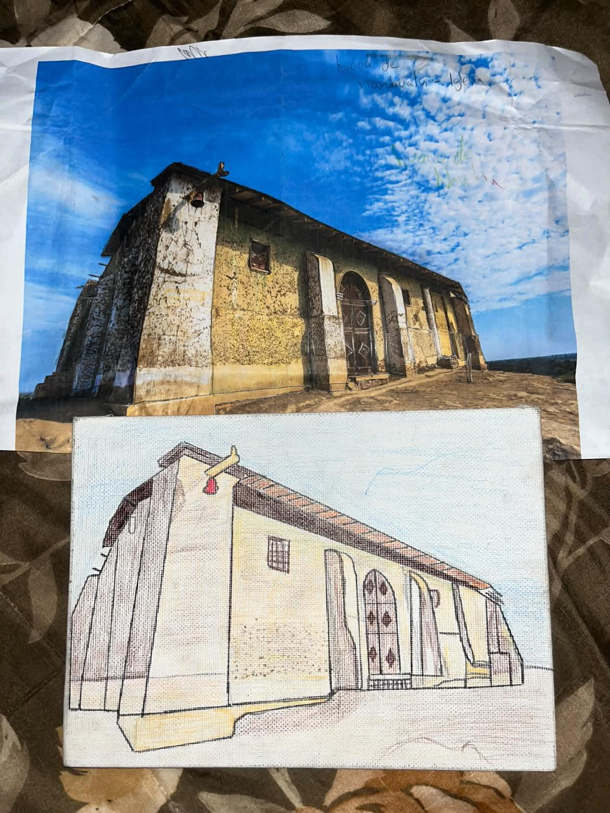

PATRIMONIO ARQUEOLÓGICO
Iglesia en la Huaca Narihualá
Autor: Amada Leguia
Técnica utilizada
Se utilizó la técnica de perspectiva y estructura con aplicación del color. La perspectiva permite representar la profundidad, las proporciones y la posición de los diferentes elementos de la estructura. La aplicación del color permite resaltar sus características y darle mayor expresividad a la representación.
La Huaca Narihualá constituye uno de los testimonios más importantes del patrimonio arqueológico de Piura y está relacionada con la cultura Tallán. Su importancia radica en que permite conocer parte de la historia y de las expresiones arquitectónicas de las antiguas sociedades que habitaron la región.
Conservar este lugar permite que las futuras generaciones puedan conocer y valorar el pasado histórico de Piura.